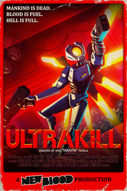

Jag har några hobbies.
När jag var yngre så skulle jag pyssla rejält mycket genom att skapa figurer och konst.
Nu när jag är lite äldre så brukar jag spela spel som Terraria, Ultrakill och andra liknande spel.
Här har vi några av mina favoritspel!
| ULTRAKILL | Terraria | Metal Gear Rising: Revengeance | Deltarune |
|---|---|---|---|
| FPS | Tvådimensionellt pixeläventyr | "Hack-and-slash" action spel | RPG äventyr |
| Ett av mina favoritspel! Jag kom ihåg när jag frågade min farsa om jag kunde köpa det några år sen. I början var det svårt men ju mer jag spelade, desto bättre blev jag och ju bättre jag blev, desto roligare var det att spela. | När jag var kanske 7 år gammal så laddade jag ner detta spel på Ipaden och jag blev beroende av det lol. Jag älskade att köra genom spelet, även när jag knappt förstod vad som hände och dog massor av gånger. Det var ett äventyr som jag kunde aldrig få nog av. | Likt ULTRAKILL så var detta också ett mycket våldsamt spel men jag älskade det ändå. Det är troligen en av det mest galna spelen som jag någonsin har spelat. | Ett spel som jag har bara nyligen börjat spela, Deltarune är ett RPG orienterat spel med många element från programmerarens förra spel, Undertale. Jag var fascinerad av Undertale och det fick mig att då ladda ner Deltarune. |
| 9/10 | 9/10 | 8/10 | 8/10 |
 |
 |
 |
 |